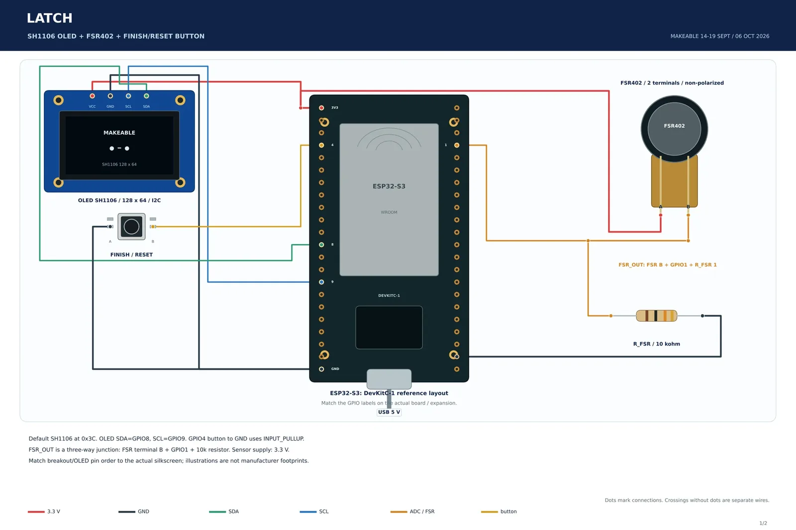

Project archive09 / HARDWARE DEVELOPMENT / PROJECT RECORD
Latch
A phone-rest focus tracker that senses pressure, times the session, and shows progress on an OLED.

01 / PURPOSEThe interaction
Setting a phone on the rest starts a timed focus session; the finish button provides a clear end interaction.
02 / HARDWAREMy contribution
I integrated the pressure sensor, OLED and control into a phone-rest form and documented the electrical connections.
03 / EVIDENCEDocumentation and status
Documented project; source package includes schematic · firmware · cad · demo.
The source package records schematic · firmware · cad · demo for the Latch project.
The shown visuals are source schematics, CAD renders, or interface previews; they do not by themselves verify a completed physical build.
DOCUMENTATION / 09Enclosure CAD render · supplied project evidence Circuit schematic · supplied project evidence
Inside the build record.
